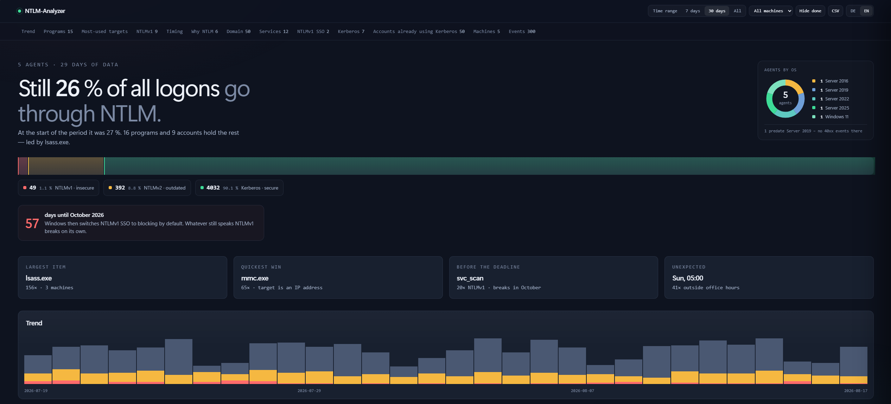
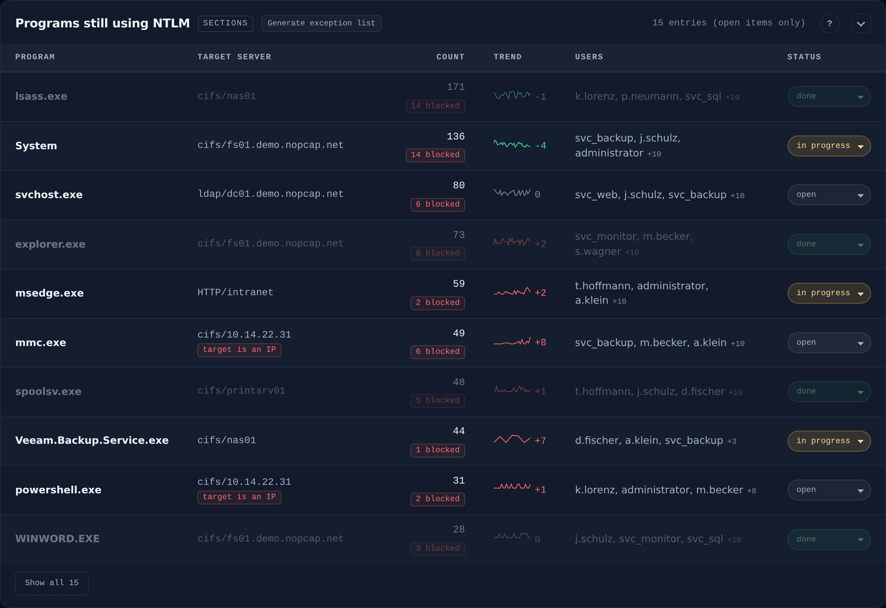
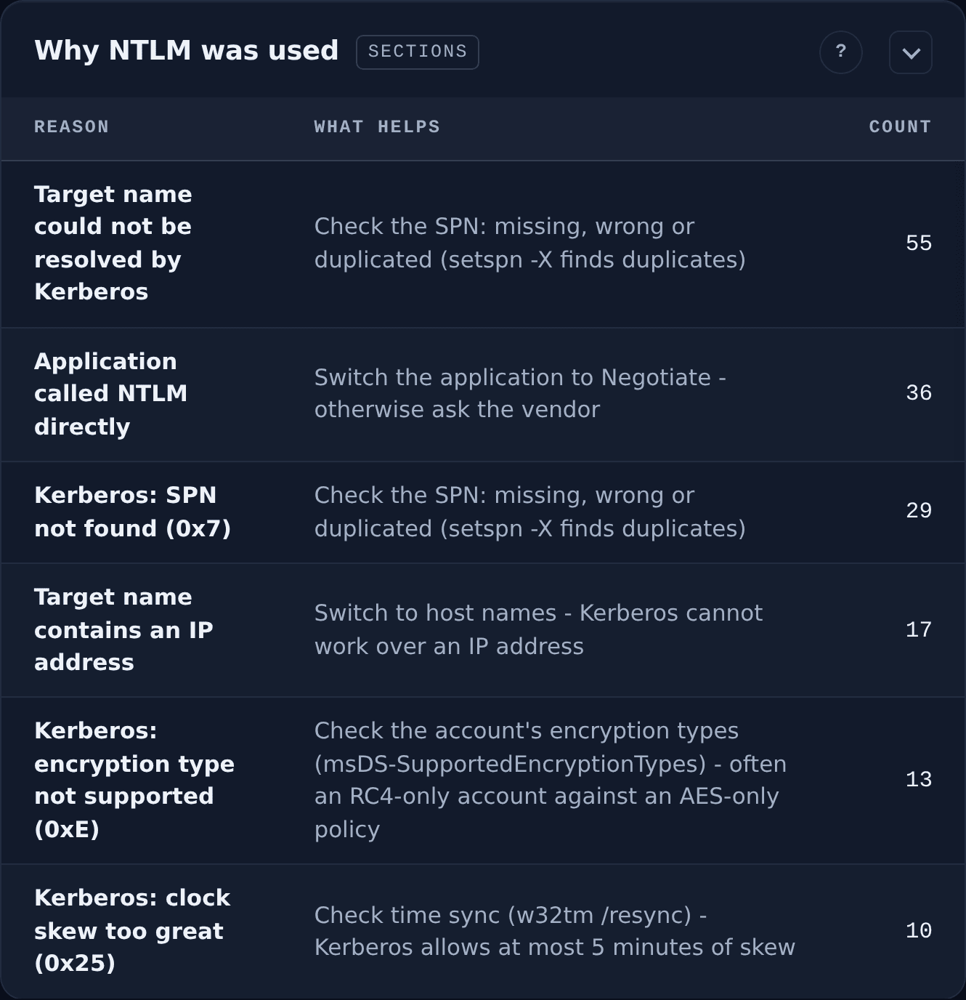
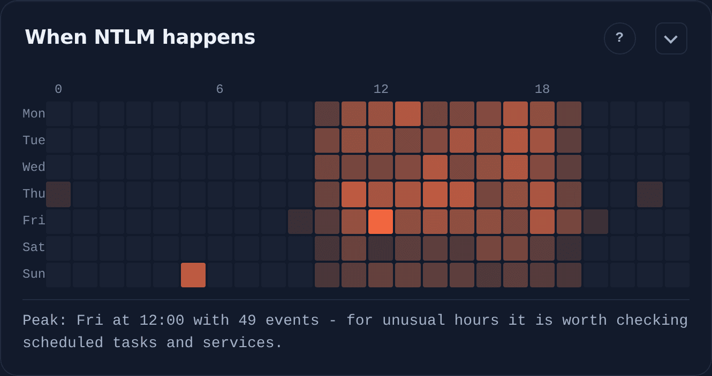
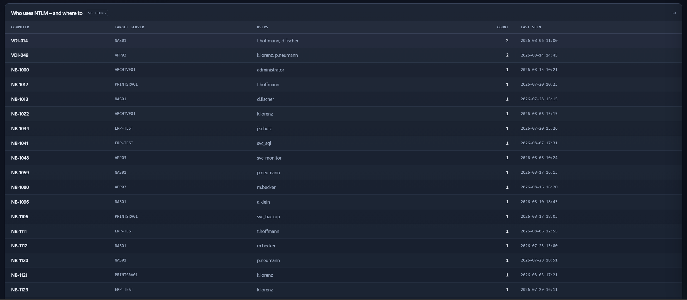
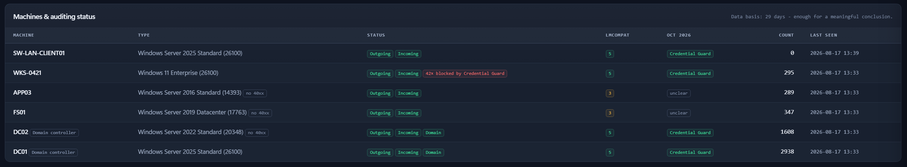
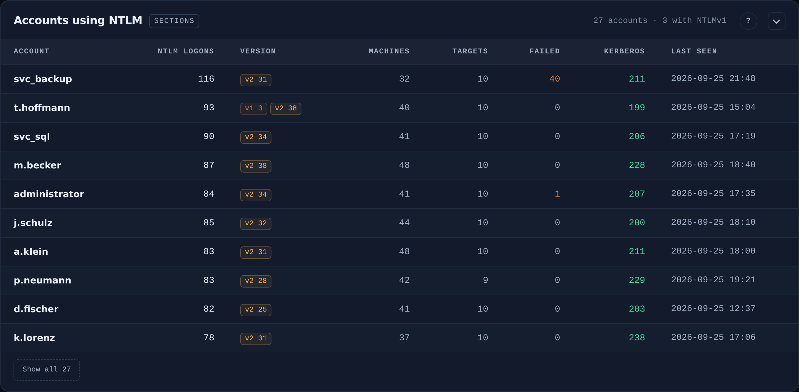
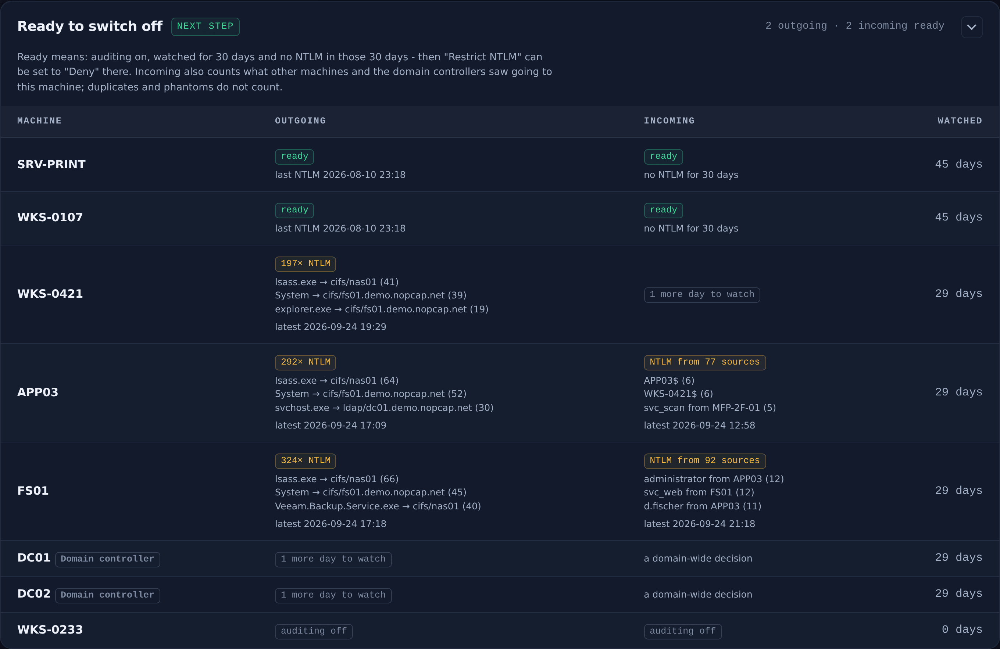
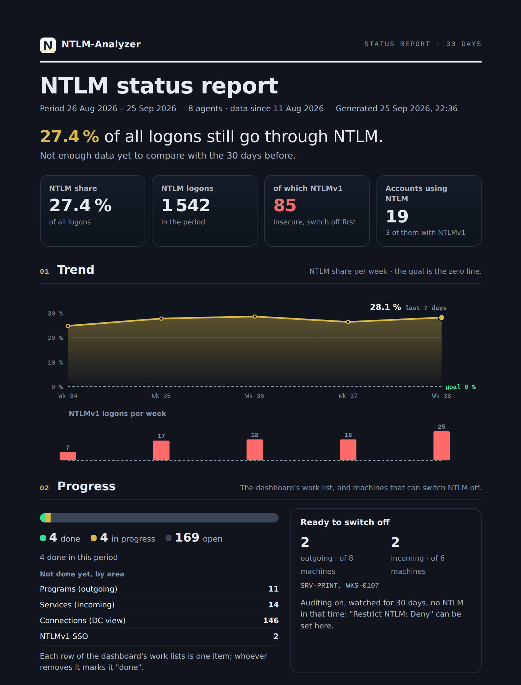
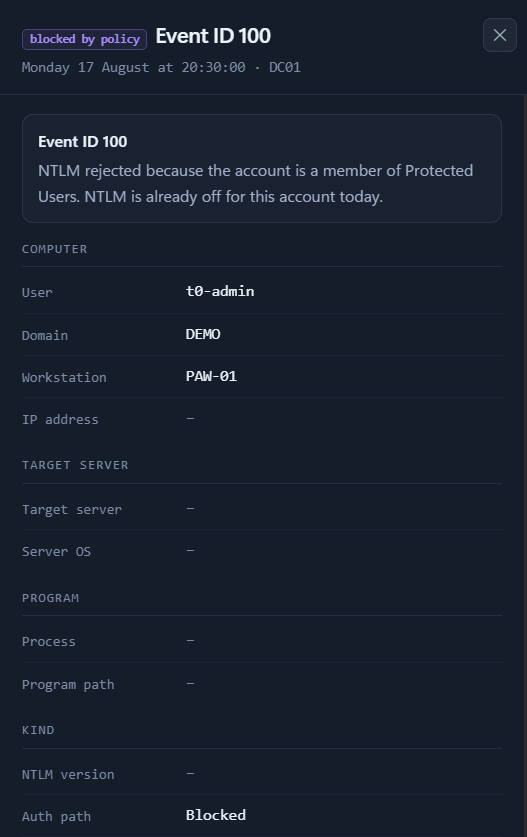

NTLM-Analyzer reads those events on every machine and turns them into something you can act on: the program, the account, the target, the reason Kerberos was not used — and what to change so that it is.
An account was successfully logged on. Logon Type: 3 Account Name: SVC_BACKUP Workstation Name: WS-14 Authentication Package: NTLM Package Name (NTLM only): NTLM V1 Key Length: 0
WS-14, 05:03 every Sunday
fs01, as a service account
Windows records that NTLM happened. It does not record what you actually need to know, and it scatters the pieces across every machine in the domain.
Every process still authenticating over NTLM, with a sparkline per row so you can see whether your fix worked — and mark it done when it did.
A missing SPN, a duplicate SPN, an IP address instead of a hostname, a cross-forest hop. Each cause names the specific change to make.
The share over time, down to the hour. You switch NTLM off when the remainder is small and known — not when the calendar says so.
These are screenshots of the real thing. The same build runs in the live demo on synthetic data from a lab domain — clickable, not a video.
The share of logons still using NTLM, split across the three protocols, with a countdown to the October deadline. Everything here is clickable down to the individual logon.

Process-level events name the program itself. Where the OS is older the panel says so, rather than showing an empty table while the rest of the dashboard keeps working.

Kerberos failures are matched against the NTLM fallback that followed them — which is how a cause can be named at all. Each row says what to change, not just what happened.

A scheduled job at 05:00 on a Sunday, on a server whose owner left two years ago. This is the fastest way to find the things no inventory knows about.

Read straight from the DC's own audit log: appliances, Linux hosts, the scanner in the print room. If it authenticates against your domain, it shows up here.

OS build, each audit setting, and October 2026 readiness per machine. A red badge here means a gap in your data — which matters more than any number on the other panels.

One row per account: how often it uses NTLM, which version, from how many machines to how many servers. Failed logons sit next to it with the reason in plain words, and one machine trying many accounts is flagged as possible password spraying.

Per machine and direction: watched long enough, auditing on, no NTLM in thirty days. Those are ready for "Restrict NTLM: Deny". The others name what would break.

For the people who will never open a dashboard: the share and its trend, what has been done, the risks rated act / watch / fine, and the next steps with names. One button, three pages.

Open any event and every raw field is there, with an explanation of what that event ID means. Filter state lives in the URL, so the exact view you are looking at is a link you can send.

The collector is one Python file with no dependencies. The agent is one EXE that installs itself as a service — or an MSI, if you roll out by policy.
Five settings under Security Options and Advanced Audit Policy. The README lists each one with its exact value.
Events are written from the moment auditing is on, never retroactively. Do this first, or you will measure an empty domain.
Creates a hardened systemd service, keeps secrets off the command line, and prints the finished agent command when it is done.
$ git clone https://github.com/Nobrac/NTLM-Analyzer.git $ cd NTLM-Analyzer && sudo ./install.sh
Elevated, once per machine. The Machines panel shows each agent with a heartbeat as it arrives.
:: unattended, by policy > msiexec /i ntlm-agent.msi /qn COLLECTORURL=https://collector:8443
The useful part is not a confident number. It is knowing which events produced it — and where the data stops.
Every figure traces back to an event that was actually logged. Where data is missing, the panel names the setting that is off, and on which machine.
The dashboard makes no external requests — no fonts, no CDN, no
telemetry. Content-Security-Policy is default-src 'none'.
The tool reads the event log and nothing else. It never touches an authentication setting. It measures; you decide when to switch.